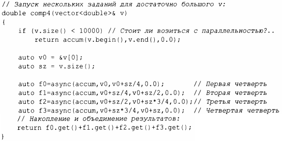

⇐15.7.2 packaged_task 15.8 Советы⇒
В этой главе я придерживался образа мышления, который считаю самым простым, но все же одним из самых сильных: рассматривайте задание как функцию, которая может выполняться одновременно с другими заданиями. Это далеко не единственная модель, поддерживаемая стандартной библиотекой С++, но она хорошо подходит для широкого спектра нужд. При необходимости могут использоваться более тонкие и хитрые модели (например, стили программирования, основанные на совместно используемой памяти).
Для запуска заданий, которые могут выполняться асинхронно, мы можем использовать функцию async ():
По сути, async () отделяет "часть вызова" функции от части "получения результата" и отделяет их обе от фактического выполнения задания. Используя async (),вам не нужно думать о потоках и блокировках. Вместо этого вы мыслите просто с точки зрения заданий, которые потенциально асинхронно вычисляют свои результаты. Существует очевидное ограничение: даже не думайте об использовании async () для задач, которые совместно используют ресурсы, требующие блокировки. При использовании async () вы даже не знаете, сколько потоков будет использоваться, потому что async () принимает решение, основанное на том, что ей известно о системных ресурсах, досrупных во время вызова. Например, async () может проверить, имеются ли какие-либо простаивающие ядра (процессоры), прежде чем решить, сколько потоков использовать.
Использование предположения о стоимости вычислений для принятия решения о запуске потока, такое как v. size () < 10000, очень примитивно и может привести к грубым ошибкам производительности. Однако данная книга - не место для надлежащего обсуждения того, как управлять потоками. Не воспринимайте эrу оценку как нечто большее, чем простое и, вероятно, неправильное предположение.
Редко бывает необходимо вручную распараллеливать алгоритм стандартной библиотеки, такой как accumulate () , потому что готовые параллельные алгоритмы, такие как reduce (par_unseq, /* ... */),обычно лучше с этим справляются (§14.3. 1). Тем не менее такая методика широко применима.
Обратите внимание, что а sync ( ) - это не просто механизм, предназначенный для параллельных вычислений для повышения производительности. Например, его также можно использовать для запуска задания для получения информации от пользователя, оставляя "основную программу" заниматься чем-то другим(§ 15.7.3).